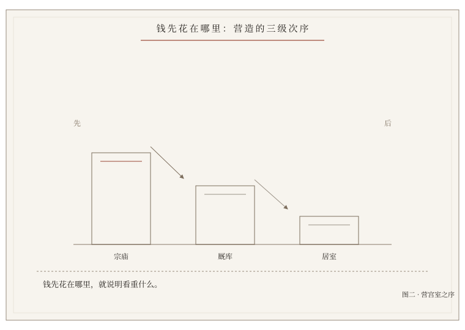

曲礼下 · 二·二十一 · 第 144 课
要盖房子，先盖宗庙，其次厩库，最后才是自己住的居室。注四字：「重先祖及国之用。」
说什么事：君子将营宫室，宗庙为先，厩库为次，居室为后。
落在哪一层：礼，兼及礼意。论的是次序，见的是价值。
为何编在此位：上节收在「公事不私议」，此节转到「先造什么」。公私之别，落到砖木上。
【经】君子將營宮室，宗廟為先，廄庫為次，居室為後。
【注】重先祖及國之用。
【疏】〔此节与下二节同疏，见二·二十二〕「凡家造」以下，总论大夫所造祭器衣服，并明祭器所寄之事。
营 营者，经营、规度。非仅动土，含筹划。
宫室 通名，非专指寝居。
宗庙 祭先祖之所。疏「崇敬祖祢，故在先」。
厩库 马厩与库藏。注以「国之用」当之：车马兵械所出。
居室 己所居处。最后。
为先／为次／为后 三级不是时间表，是价值表。
君子将要营造居处，先造宗庙，其次造马厩与库房，最后才造自己的住处。
一个人的钱先花在哪里，就说明他看重什么。此节把这件事写成营造的次序：先给祖先，再给国用，最后给自己。三级次序，一句话说尽。
第一层 先造不可见者 宗庙是给人拜的，不是给人住的。先造它，等于承认有一部分生活不为自己。
第二层 厩库居次 厩库是「国之用」，介于公与私之间：马为君事，库为家储。礼把它放在祖先之后、己身之前。
第三层 居室最后 最后一处不是不重要，是可以等。能等的事放在最后，本身就是一种排序的诚实。
第四层 营字的分量 营是规度，不是动土。此节所说，其实是「预算怎么排」，不是「工怎么开」。
与今日何干 装修先做哪一间、预算先给谁，仍是同一道题。先给共享的空间与要传下去的东西，最后才给自己的舒服。
| 左 | 右 |
|---|---|
| 宗庙为先 | 崇敬祖祢 |
| 厩库为次 | 国之用，马与库藏 |
| 居室为后 | 己所居处，可以等 |
| 将营宫室 | 营是规度，先排预算 |
| 三级次序 | 价值表，非时间表 |
| 重先祖及国之用 | 注四字，全节之纲 |
画三座建筑的等轴轮廓，自左至右排列、体量渐小：最左一座有台基与双柱（示意宗庙），中间一座低矮、带一道栅栏（示意厩库），最右一座最小、只有一间（示意居室）。三座之间以极淡的点线相连，线上标三枚小圆，自左至右依次加深，示意次第。地面一条横线。不画人、不写文字。赭色只用在最左那座台基上。
